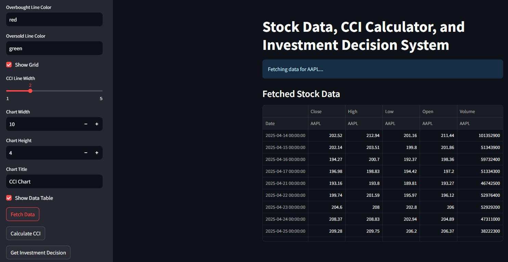
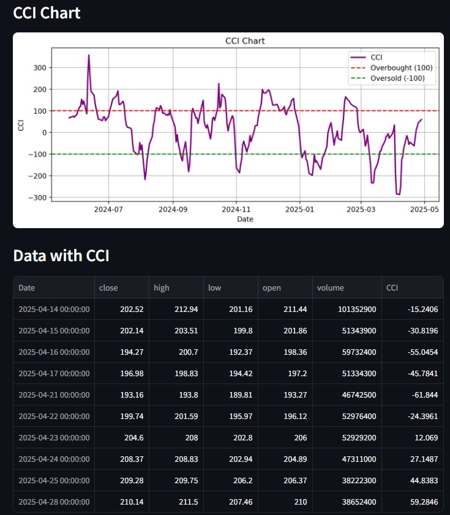
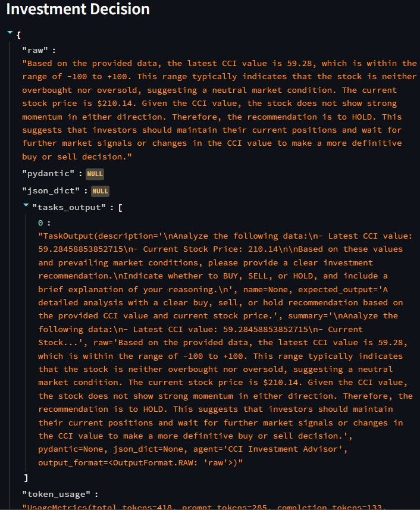
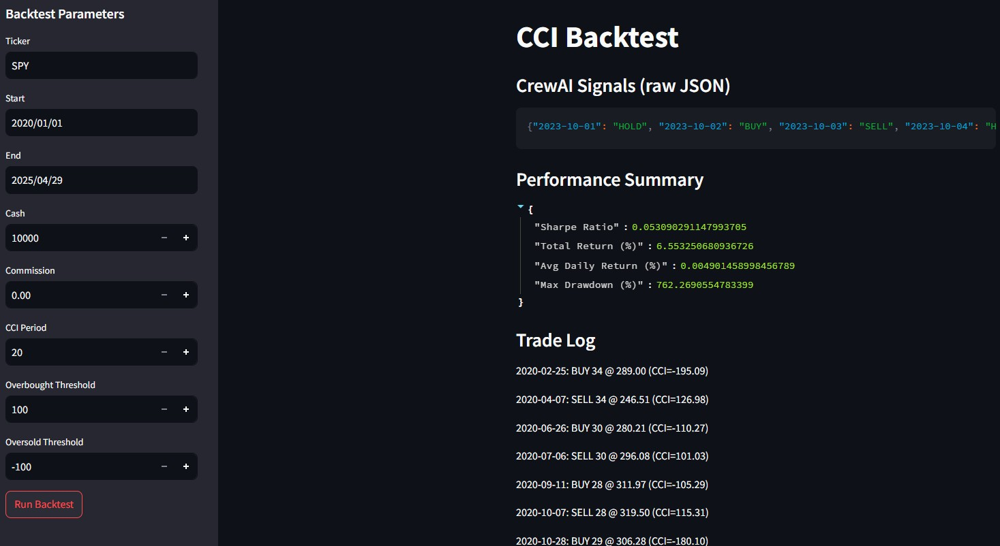
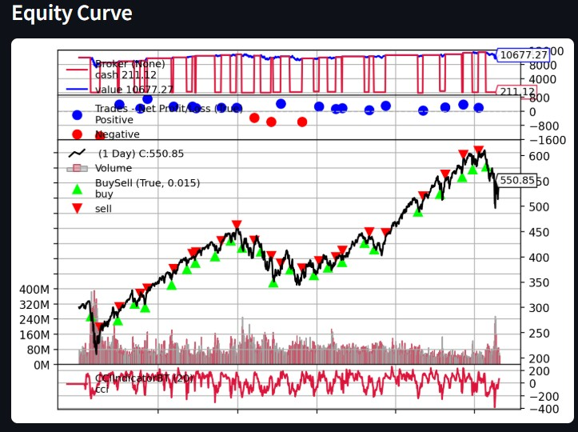

This project implements an AI-driven stock prediction system by integrating a custom Commodity Channel Index (CCI) indicator with CrewAI agents. I contributed by designing and implementing the CCI calculation engine, developing a Streamlit-based user interface, integrating real-time and historical stock data fetching, building CrewAI agents for investment recommendations, and establishing a backtesting framework with unit and integration tests. All code is publicly available at GitHub Repository.
| Sprint | Objective |
|---|---|
| Sprint 1 Feb 1–3, 2025 | Minimal viable product: Streamlit UI + baseline CCI indicator |
| Sprint 2 Feb 8–15, 2025 | Customization features + real-time & historical data integration |
| Sprint 3 Mar 17, 2025 | CrewAI investment decision integration & initial testing |
| Sprint 4 Apr 1–22, 2025 | Performance/scalability tests, unit/integration tests & backtesting framework |
Key tasks I completed:





| Date | Commit | Description | Story | Task |
|---|---|---|---|---|
| Feb 3, 2025 | 8df1d1731997324652db90a1508c8814d88c239b | CCI Indicator | CCI | CCI.1 |
| Feb 8, 2025 | 991d8f6754da60c3b34218492ff3d87e212084dc | CCI.2 | CCI | CCI.3 |
| Feb 15, 2025 | 7eb568370f3c501a4024b7b457c5abaff90e2986 | CCI real time data code added | CCI | CCI.3 |
| Mar 17, 2025 | c7b158ea82981d269c34a1fd0e49d18c52683689 | CCI investment decision code added | CCI | CCI.8 |
| Apr 1, 2025 | 4a34a45426c55d5282cb890e522066f72b482bf2 | Unit & integration tests for CCI | CCI | CCI.10 |
| Apr 22, 2025 | 76c980f6895df54aed6bfd7dbeccfd1510ddd73d | CCI indicator backtest code | CCI | CCI.11 |